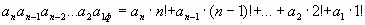
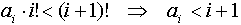
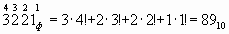
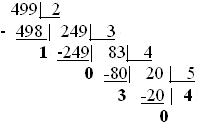
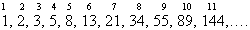
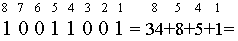

В этом параграфе мы будем рассматривать только представление целых чисел.
Как уже говорилось, базисом факториальной системы счисления являются числа: 1!, 2!, 3!, …, n!,…
Напомним определение факториала:
0!=1; 1!=1; 2!=1*2; 3!=1*2*3; 4!=1*2*3*4; …., т.е. n!=1*2*3*…*n.
Идею такой системы счисления можно пояснить, рассмотрев счеты следующего вида:
На нижней проволоке, отведенной для единиц младшего разряда, вес которых равен 1, всего 2 косточки. На следующей проволоке - 3 косточки, вес которых 2 единицы каждая. На третьей проволоке 4 косточки, вес каждой 2*3. На n-ой проволоке (n+1) косточек. Вес каждой 1*2*3*4*…(n-1)=(n-1)! . Вес единиц от разряда к разряду растет, но неравномерно. Это приводит к представлению числа в следующем виде:

Слева – запись числа в факториальной системе счисления ( об этом говорит индекс ф справа внизу числа).Эта формула перевода из факториальной системы счисления в десятичную. Обратите внимание, что нумерация разрядов идёт не с нуля, как в р-ичных системах, а с единицы.
На цифры в записи числа накладывается следующее ограничение:
т.к. 
Т.е. при 1! могут стоять только цифры 0 или 1; при 2! – только 0, 1, 2 и т. д.
Алгоритм перевода из десятичной системы счисления в факториальную аналогичен переводу из десятичной в p-ичную путем деления. Отличие в том, что в первый раз число делим на 2, первое частное на 3, второе частное на 4 и т.д.
Пример 1. Перевести число из факториальной системы счисления в десятичную. Напишем над цифрами номера разрядов. Номер разряда n соответствует базису n!.

Пример 2. Перевести число 499 из десятичной системы счисления в факториальную.

Теперь выписываем остатки в обратном порядке, начиная с последнего частного:
40301ф=(проверим)=4*5!+0*4!+3*3!+0*2!+1*1!=499.
С числами такой системы счисления можно проводить арифметические операции, которые незначительно отличаются от десятичной арифметики. В этой системе счисления можно также представлять рациональные числа.
Базисом Фибоначчиевой системы счисления являются числа Фибоначчи:
1, 2, 3, 5, 8, 13, 21, 34… т.е. каждое следующее число равно сумме двух предыдущих. Алфавитом этой системы счисления являются цифры 0 и 1. В записи числа в этой системе счисления не могут стоять две единицы подряд (т.к. для чисел Фибоначчи bk+1=bk+bk-1).
Пример 3. Требуется перевести число 100100101фиб в десятичную систему счисления
Выпишем и пронумеруем несколько первых элементов базиса:

Теперь напишем номера разрядов над числом:
9 8 7 6 5 4 3 2 1
1 0 0 1 0 0 1 0 1фиб=1*55+0*35+0*21+1*13+0*8+0*5+1*3+0*3+1*1=7210
Т.е. фактически, если в разряде стоит единица, то соответствующий элемент базиса с этим номером присутствует в сумме, в противном случае – отсутствует.
Пример 4. Может ли комбинация 10011001 быть записью некоторого числа в фибоначчиевой системе счисления? Попытаемся перевести число в десятичную систему счисления (отсутствующие слагаемые не будем писать):

По определению чисел Фибоначчи, два соседних элемента базис в сумме дают следующий элемент. Т.е. 8+5=13:
= 34 +13 +1=10100001фиб
Следовательно, первая запись числа не верна, две единицы подряд идти не могут.
Для перевода из десятичной системы счисления в фибоначчиеву можно использовать алгоритм, подобный алгоритму компьютерного перевода из десятичной в двоичную систему счисления.
Пример 5. Перевести в фибоначчиеву система счисления число 7810.
Т.е. 78= 55+21+2= 1*55+0*34 +1*21+0*13+0*8+0*5+0*3+1*2+0*1=101000010фиб
78
- 55
23
- 21
2
- 2
0
Системы, аналогичные фибоначиевой, применяются при кодировании, они имеют интересные особенности, которые до сих пор изучаются.
В рассмотренных выше системах счисления “нетрадиционность” заключалась в том, что в качестве базиса системы рассматривалась последовательность чисел, не являющаяся геометрической прогрессией. “Цифра” при этом всегда истолковывалась как натуральное число или ноль. Оказывается, в понятие цифра можно вкладывать и другой смысл.
Рассмотрим следующую задачу: имеется набор гирь в 1, 3, 9 и 27 кг. Для того чтобы взвесить предмет весом 1 кг следует на одну часу весов положить сам предмет, а на другую – гирю в 1кг. Предмет весом в 2 кг можно взвесить следующим образом: на пустую чашку весов поместили 3 кг, а на чашку с грузом – 1 кг. Записи о взвешивании можно делать следующим образом:
| Гиря 27 | Гиря 9 | Гиря 3 | Гиря 1 | |
| 1кг | 0 | 0 | 0 | 1 |
| 2кг | 0 | 0 | 1 | -1 |
| 3кг | 0 | 0 | 1 | 0 |
| 4кг | 0 | 0 | 1 | 1 |
| 5кг | 0 | 1 | -1 | -1 |
Т.е. если перед цифрой стоит “-”, то эту гирю (соответствующую разряду) поместили на чашку с грузом и её масса вычитается.
Ряд взвешиваний можно продолжить. Результат любого взвешивания выражается числом, записанным в системе счисления с основанием p=3 и цифрами 1, 0, -1, где “-1” означает “минус единица”.
Можно привести и примеры чисел, которые начинаются с “-1”:
–1 1 –1 0 13= –1*81+1*27 –1*9+0*3 +1*1= –6210
Можно заметить, что число, начинающееся с “-1”, – отрицательное; начинающееся с “1” – положительное. Это очень важная особенность: для обозначения отрицательной величины к числу не требуется присоединять дополнительный знак, следовательно, при выполнении арифметических операций не требуется анализировать знаки операндов. Эта особенность очень привлекательна при конструировании ЭВМ.
В Советском Союзе в 1958 году была построена экспериментальная модель ЭВМ, арифметика которой базировалась на троичной уравновешенной системе счисления. В 1962-1965 г. было выпущено более 50 промышленных экземпляров ЭВМ «Сетунь». Она была далека от совершенства, но значительно дешевле машин её класса и превосходила их по быстродействию. О перспективности подобных машин говорит следующая цитата: «Экспериментальный образец машины "Сетунь", построенный в 1957 - 1958 гг., находился в эксплуатации 15 лет, причем из 4 тыс. использованных в нем пороговых элементов типа быстродействующих магнитных усилителей с питанием импульсами тока были заменены вследствие отказов только 3 элемента (все 3 на первом году эксплуатации): 2 из-за пробоя диодов типа Д1, по-видимому, обладавших дефектами изготовления, и 1 из-за нарушения изоляции между обмотками импульсного трансформатора. Машина устойчиво работала при значительной нестабильности напряжения питающей электросети и в достаточно широком диапазоне температур окружающей среды (от +15 до +30° С). Серийные экземпляры машин "Сетунь" успешно эксплуатировались в различных климатических зонах как с холодным, так и с жарким, а также резко континентальным климатом (например, в Ашхабаде, Душанбе, Махачкале, Иркутске, Якутске, Одессе), причем без какого-либо сервисного обслуживания и практически без запасных частей. Едва ли это может свидетельствовать о плохой надежности аппаратуры.»
1001001; 101010.
66; 127;
-1 0 1 1 0; 1 1 1 1.